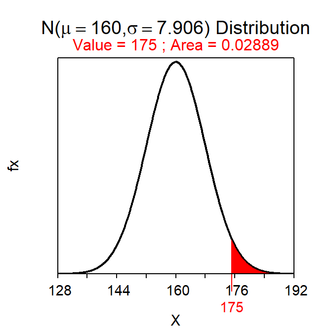
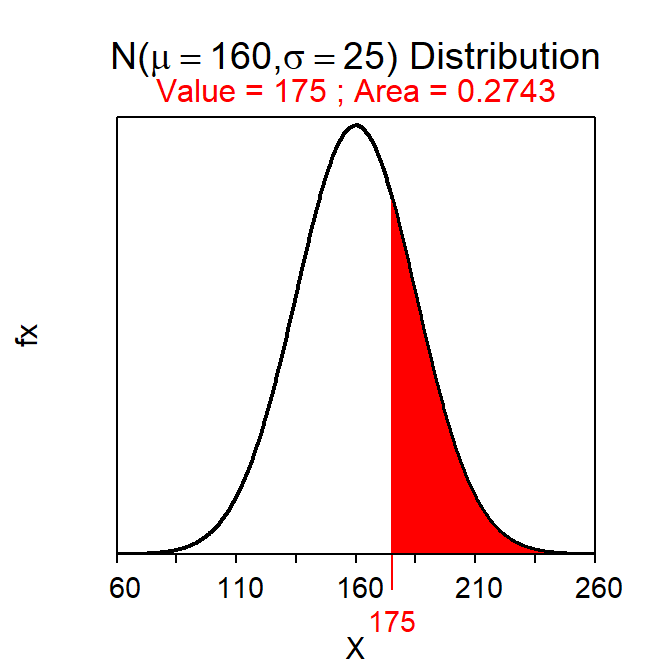

Module 12 Probability Introduction
Probability is the “language” used to describe the proportion of times that a random event will occur. The language of probability is at the center of statistical inference (see Modules 13-16). Only a minimal understanding of probability is required to understand most basic inferential methods, including all of those in this course. Thus, only a short, example-based, introduction to probability is provided here.53
12.1 Probability of Individuals
The most basic forms of probability assume that items are selected randomly. In other words, simple probability calculations require that each item, whether that item is an individual or an entire sample, has the same chance of being selected. Thus, in simple intuitive examples it will be stated that the individuals were “thoroughly mixed” and more realistic examples will require randomization.54
If every item has the same chance of being selected, then the probability of an event is equal to the proportion of items in the event out of the entire population. In other words, the probability is the number of items in the event divided by the total number of items in the population.
For example, the probability of selecting a red ball from a thoroughly mixed box containing 15 red and 10 blue balls is equal to \(\frac{15}{25}\)=0.600 (i.e., 15 individuals (“balls”) in the event (“red”) divided by the total number of individuals (“all balls in the box”); Figure 12.1-Left). Similarly, the probability of randomly selecting a woman from a room with 20 women and 30 men is 0.400 (\(=\frac{20}{50}\); Figure 12.1-Right). In both examples, the calculation can be considered a probability because (i) individuals were randomly selected and (ii) a proportion of a total was computed.
Figure 12.1: Depictions of a “box” with 15 red balls and 10 blue balls (Left) and a “room” with 30 men and 20 women (Right).
The two previous examples are simple because the selection is from a small, discrete set of items. Probabilities may be computed for a continuous variable if the distribution of that variable is known for the entire population. For example, the probability that a random individual is greater than 71 inches tall can be calculated if the distribution of heights for all individuals in the population is known (or reasonably approximated). For example, as shown in Module 6, if it can be assumed that heights is N(66,3), then the proportion of individuals in the population taller than 71 inches tall is 0.048 (Figure 12.2).55 This result is a probability because (i) the individual was randomly selected and (ii) the proportion of all individuals of interest in the entire population was found.
Figure 12.2: Calculation of the probability that a randomly selected individual from a \(N(66,3)\) population will have a height greater than 71 inches.
12.2 Probability of Statistics
The probability of a statistic computed from a random sample can also be found because the Central Limit Theorem (CLT) explains the distribution of statistics from all possible samples from a population (Module 11). Probability calculations from sampling distributions will be the basis for making statistical inferences in Modules 13-16. These calculations are introduced here.
If the sample size is large enough, then the CLT states that the sampling distribution of sample means is approximately normal and the methods from Module 7 may then be used to compute probabilities. Therefore questions such as “what is the probability of observing a sample mean of less than 95 mm from a sample of n=50 from Square Lake?” can be answered. This question is answered by first recalling that population all fish in Square Lake has μ=98.06 mm and σ=31.49 mm. Because n=50 is greater than 30, the CLT says that the distribution of the sample means from these samples is \(\bar{\text{x}}\)~N(98.06,\(\frac{34.19}{\sqrt{50}}\)) or \(\bar{\text{x}}\)~N(98.06,4.835). Thus, the proportion of samples of n=50 from Square Lake with an \(\bar{\text{x}}\)<95 mm is 0.263, which comes from computing the area less than 95 on a N(98.06,4.835) distribution (Figure 12.3).56
( distrib(95,mean=98.06,sd=34.19/sqrt(50)) )Figure 12.3: Proportion of sample means less than 95 mm on a \(N(98.06,4.84)\) distribution.
Consider another question – “what is the probability of observing a sample mean of more than 95 mm in a sample of n=40 from Square Lake?” At first glance it may appear that this question can be answered from the work done for the previous question. However, the sample sizes differ between the two questions and, because the sampling distribution depends on the sample size, a different sampling distribution is used here. Because n>30 the sampling distribution will be \(\bar{\text{x}}\)~N(98.06,\(\frac{34.19}{\sqrt{40}})\) or \(\bar{\text{x}}\)~N(98.06,5.406) (Note the different value of the SE). Thus, the answer to this question is the area to the right of 95 on a N(98.06,5.406), which is 0.714 (Figure 12.4).
( distrib(95,mean=98.06,sd=34.19/sqrt(40),lower.tail=FALSE) )Figure 12.4: Proportion of sample means less than 95 mm on a N(98.06,5.406) distribution.
Always check what sample size is being used – if the sample size changes, then the sampling distribution changes.
Consider two more Square Lake example questions. First, “what is the probability of observing a sample mean of more than 95 mm in a sample of n=10 from Square Lake?” This question is again about a statistic, but because n<15 and the population is not known to be normal it is not known that the sampling distribution is normal. Thus, this question cannot be answered.
Second, “What is the probability that a fish will have a length less than 85 mm?” This question is about an individual, not a statistic as in the previous questions. Thus, the population distribution, NOT the sampling distribution, is appropriate here. However, this question also cannot be answered because the population distribution is not known to be normally distributed.
Two points are illustrated with these last two questions. First, population distributions are used for questions about individuals and sampling distributions are used for questions about statistics. Second, if the distribution is not known to be normal, no matter which distribution is used, then the probability cannot be computed.57
One issue you may have noticed is that these calculations require knowing the mean, standard deviation, and shape (if n<30) of the population. However, the population usually cannot be “seen” (recall Module 1) and, thus, it is uncomfortable to assume so much is known about the population. The only appropriate response to this concern is that we are building towards being able to make inferences with statements based on probabilities that take into account sampling variability. The questions in this module, while not yet realistic, will help you to better understand sampling distributions for when they are needed to make inferences in later modules.
12.3 A Process for Handling Probability Questions
As seen in the previous two sections, probability questions may use either the population distribution or the sampling distribution. To properly answer these questions it is important to determine
- which of these two distributions to use,
- whether that distribution is normal or not, and
- the specific characteristics (i.e., mean and dispersion) of that distribution.
The type of distribution to use is dictated by whether the question is about an individual or about a statistic. Questions about individuals require using the population distribution, whereas questions about statistics require using the sampling distribution. Information about the population distribution, such as whether it is normally distributed or not and what the mean and standard deviation are, will be provided in the background information to the question. In contrast, specifics about the sampling distribution must be identified from applying the rules of the Central Limit Theorem to information provided in the background. For both distributions, the probability question cannot be answered if the distribution is not normal. Both distributions are centered on μ, but the population distribution uses the standard DEVIATION as a measure of dispersion, whereas the sampling distribution uses the standard ERROR.
| Question about | Which Distribution to use | Info about Normality | Center | Dispersion |
|---|---|---|---|---|
| Individual | Population | Background | \(\mu\) | SD=\(\sigma\) |
| Mean | Sampling | CLT | \(\mu\) | SE=\(\frac{\sigma}{\text{n}}\) |
12.4 Example Questions
Suppose (as in Section 7.3) that the total miles driven per per week by a particular person is normally distributed with a mean of 160 miles and a standard deviation of 25 miles. Use this information to answer the following questions.
- What is the probability that the driver drives more than a mean of 175 miles in a random sample of 10 weeks?
- 0.029 – This question is about a mean and would thus use the sampling distribution. The sampling distribution is normal because even though n<15, we are told in the background that the population distribution is normal (thus, the last option in the CLT is met). This is then a Forward-Right question using a SE. The probability is computed with
( distrib(175,mean=160,sd=25/sqrt(10),lower.tail=FALSE) )
- What is the probability that the driver drives more than 175 miles in a random week?
- 0.274 – This question is about an individual (i.e., one week) and would thus use the population distribution. We are told in the background that the population distribution is normal. This is then a Forward-Right question using a SD. The probability is computed with
( distrib(175,mean=160,sd=25,lower.tail=FALSE) )
Suppose that the number of points that the Iowa Hawkeyes basketball team scores per game is right-skewed with a mean of 73 points and a standard deviation of 11 games. Use this information to answer the following questions.
- What is the probability that the Hawkeyes will score more than a mean of 75 points in a random sample of 10 games?
- Can’t Answer, because the sampling distribution is not normal – This question is about a mean and would thus use the sampling distribution. The sampling distribution is NOT normal because n<15 and, as told in the background, the population distribution is NOT normal (thus, no aspect of the CLT has been met).
- What is the probability that the Hawkeyes will score more than a mean of 75 points in a random sample of 30 games?
- 0.309 – This question is about a mean and would thus use the sampling distribution. The sampling distribution is normal because n≥30 (thus, the first part of the CLT has been met). This is then a Forward-Right question using a SE. The probability is computed with
( distrib(75,mean=73,sd=22/sqrt(30),lower.tail=FALSE) )- What is the probability that the Hawkeyes will score fewer than a mean of 72 points in a random sample of 20 games?
- 0.419 – This question is about an mean and would thus use the sampling distribution. The sampling distribution is normal because n≥15 and the population is not strongly skewed (thus, the second part of the CLT has been met). This is then a Forward-Left question using a SE. The probability is computed with
( distrib(72,mean=73,sd=22/sqrt(20)) )- What is the probability that the Hawkeyes will score more than 75 points in a random game?
- Can’t Answer, because the population distribution is not normal – This question is about an individual (a game) and would thus use the popuulation distribution. The population distribution, as stated in the background, is right-skewed and is, thus, NOT normal.
If a distribution is not normal then the probability cannot be computed. In that case say you cannot answer the question and the explicitly state why. See the examples in the main reading.
A deeper understanding of probability is required to understand more complex inferential methods beyond those in this course.↩︎
See Module 3 for methods to randomly select or allocate individuals.↩︎
As computed with
distrib(71,mean=66,sd=3,lower.tail=FALSE).↩︎Notice that the standard error of \(\bar{\text{x}}\) is put into the
sd=argument ofdistrib(). Recall that a standard error really is a standard deviation, it is just named differently (see Section 11.1.1). R has no way of knowing whether the question is about an individual or a statistic; it requires the dispersion in either case and calls both of themsd=.↩︎At least with the techniques in this course.↩︎